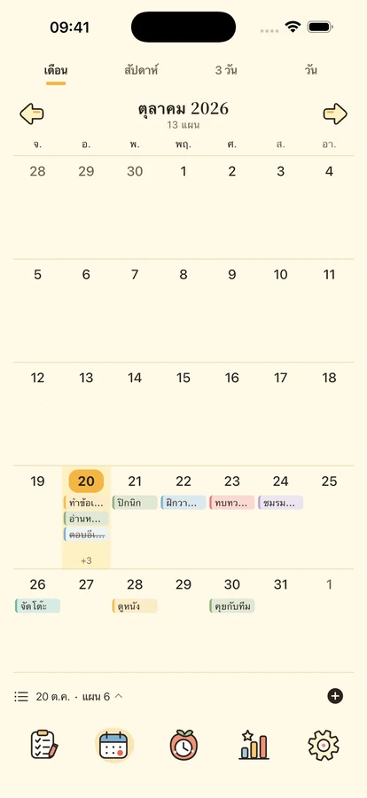
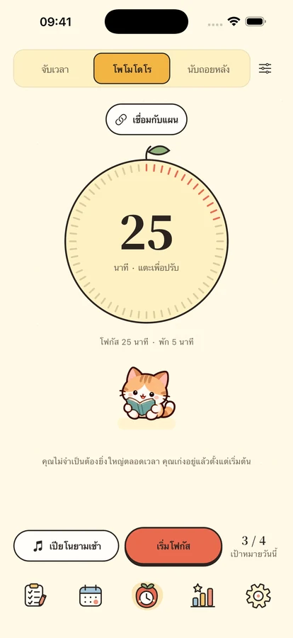
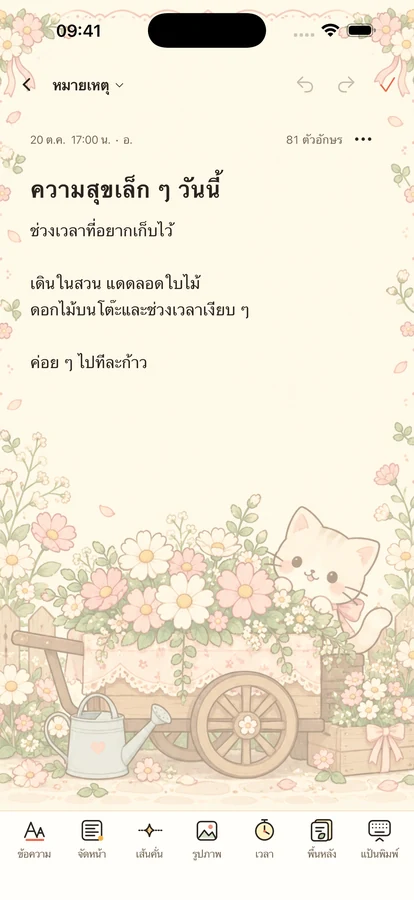

จัดลำดับงานและจับเวลาโพโมโดโร
จัดแผนด้วยตารางสี่ช่อง โฟกัสทีละอย่าง และเก็บไอเดียกับวันสำคัญไว้ใกล้ตัว พร้อมเพื่อนตัวน้อย
สำหรับ iPhone และ iPad

ทีละอย่าง ตามจังหวะของคุณ
เริ่มจากสิ่งเล็ก ๆ
เว้นที่ให้แผน เวลา และกำลังใจ

ให้แต่ละแผนมีที่ของตัวเอง
แยกความสำคัญกับความเร่งด่วนด้วยสี่ช่อง ดูรายวัน สัปดาห์ และเดือนบนปฏิทินหรือไทม์ไลน์ พร้อมแผนซ้ำ แผนย่อย และการเตือนในเครื่อง
เวลานี้ ให้สิ่งตรงหน้า
เลือก Pomodoro นับถอยหลัง หรือนับเวลา พร้อมเพลงออฟไลน์ 8 เพลงและเสียงบรรยากาศ 11 แบบ มีเพื่อนสี่ตัวและนาฬิกาพลิกหน้า คลังเสียงทั้งหมดต้องใช้ Plus หรือทดลองสามวัน เพลงหนึ่งเพลง เสียงบรรยากาศหนึ่งแบบ และเงียบใช้ฟรี Plus: นาฬิกาสไตล์พรีเมียม · วิดเจ็ตระดับพรีเมียม · ข้อมูลเชิงลึก · แม่แบบแผน · การสำรองข้อมูลบนคลาวด์อัตโนมัติ · ประวัติการสำรองข้อมูล.



เก็บไอเดียและวันดี ๆ
บันทึกข้อความจัดรูปแบบ รูปภาพ และกระดาษโน้ต ค้นตามวันหรือหมวดหมู่ นับวันถึงวันเกิดและวันครบรอบ วิดเจ็ตแผน ปฏิทิน สมาธิ วันสำคัญ และบันทึกต้องใช้ iOS 17 ขึ้นไป
เรื่องราวของคุณ ยังเป็นของคุณ
ฟังก์ชันในเครื่องไม่ต้องลงชื่อเข้าใช้ สำรองคลาวด์ด้วยตัวเอง การวิเคราะห์ปิดเป็นค่าเริ่มต้น ส่งออกเนื้อหา จัดการความเป็นส่วนตัว และลบบัญชีได้
ความเป็นส่วนตัว